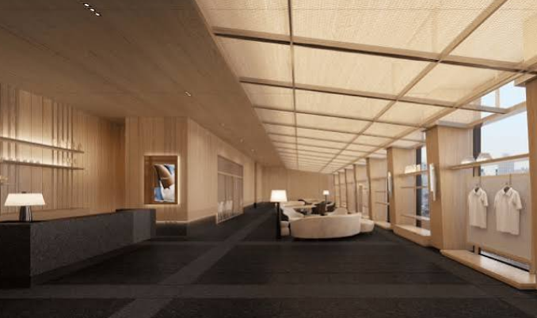
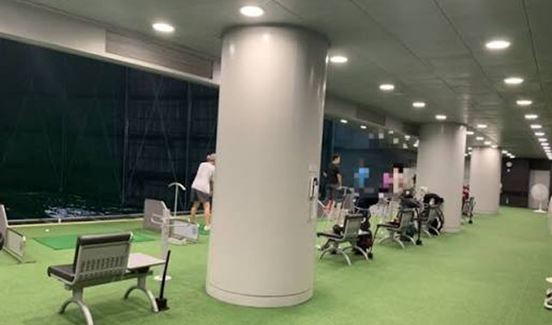
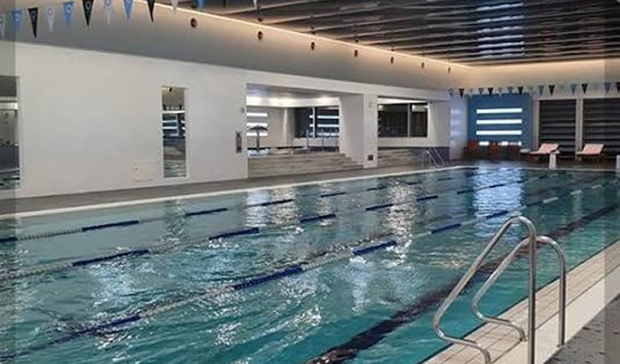
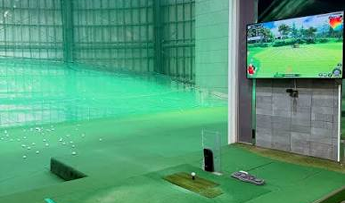
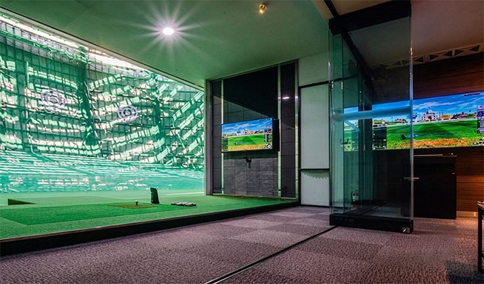
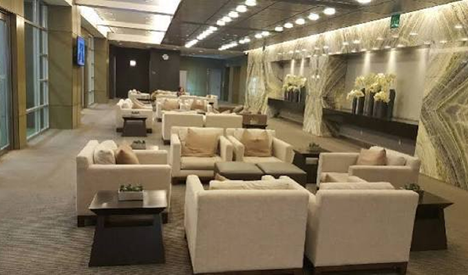
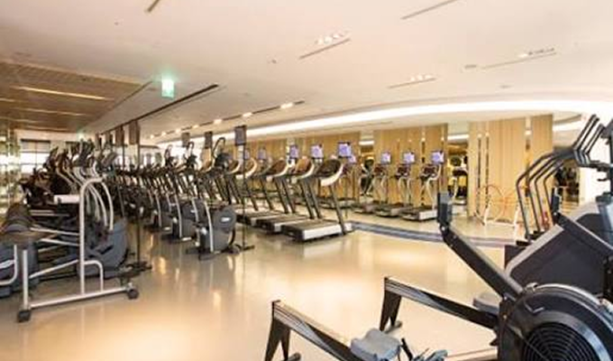
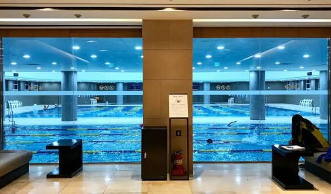
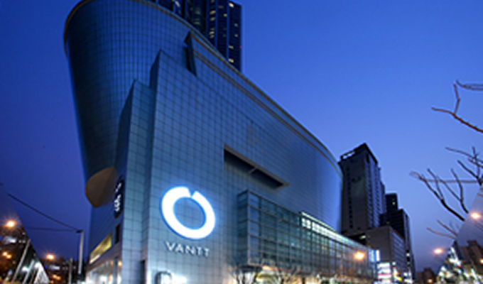
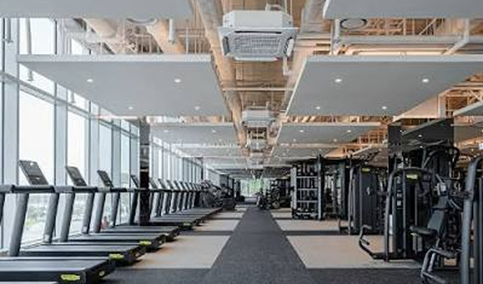

사업영역
사업영역
HOME > 사업영역 > SHP사업
SHP사업Smart Healthcare Platform
첨단 플랫폼과 차별화된 세심함으로 시공간을 넘어 언제나 곁에 있는 스마트 건강 파트너가 됩니다.
Premium Experience
for Healthy Life
호텔신라는 신라호텔의 피트니스 클럽 운영 노하우와 최신 IT 기술을 바탕으로
2022년 독립 헬스케어
전문법인 SHP코퍼레이션을 설립해 고객이 꿈꾸는 건강한 삶을 실현하여 나가고 있습니다.
온·오프라인이 조화로운
스포츠레저사업과 헬스케어 서비스를 통해 또 다른 성장 동력으로 발전할 것입니다.
-
Innovative Fitness
& Healthcare Service - 1993년 삼성레포츠클럽 운영을 시작으로 2004년 아시아 최대 규모의 피트니스 클럽인 ' 반트 (VANTT) '를 운영하는 등 럭셔리 회원제 피트니스클럽의 새로운 패러다임을 열고 있으며, 2014년 CFC(Corporate Fitness Center) 브랜드 ‘드마크(demarq)’를 런칭하여 전국 54개 시설에서 기업 임직원들과 만나고 있습니다.또한 2015년에 운동, 식사, 건진 기록 등을 24시간 모바일 앱으로 손쉽게 관리하는 'SHP(Smart Healthcare Pal)' 건강관리 서비스 개발과 함께 2022년 오프라인 피트니스 기반의 온라인 헬스케어 사업에 진출하며 디지털 신기술을 접목한 혁신을 이끌고 있습니다.
-
- PROFESSIONAL과학적 근거 기반 헬스 증진 전문성
- 운동 프로그램 연구소 운영
- 자체 개발 건강 증진 전문 자격 인재 양성
- 생리학, 영양 관리, 멘탈 케어로 전문적인 관리
-
- CUSTOMIZED고객 데이터 기반 맞춤형 헬스케어
- 건강,식사,운동 데이터 분석 모바일 서비스
- 강습 강사 코칭 시스템
- 신규 온보딩 프로그램과 식단 관리 유소견자 프로그램
-
- EXPERIENCE다양한 고객 건강 상태에 대한 이해
- 신체 및 정신 건강 통합 케어 EAP프로그램
- 국내 주요 대기업 회원들에 대한 경험 축적
- 측정/상담/처방/프로세스 표준화
ARCHITECTURAL SANCTUARY & SPACES빛과 공간의 순수한 미학
군더더기 없는 건축적 라인과 자연광의 울림.
신라호텔과 반트가 지향하는 하이엔드 웰니스 공간 본연의 모
습을 온전히 마주하세요.
-

-

-

-

-

-

-

-

-

-
